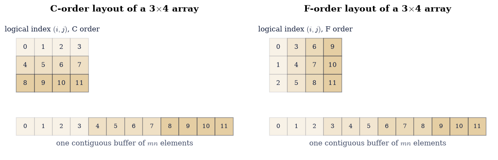
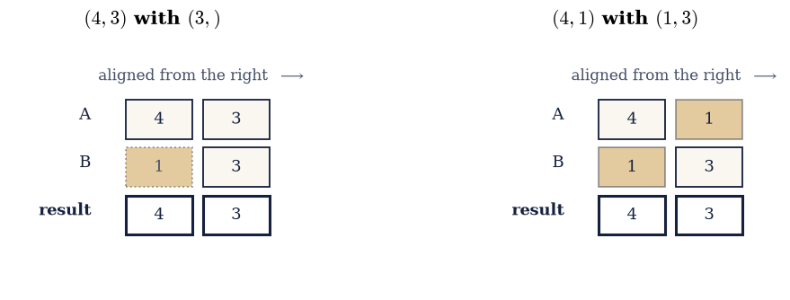
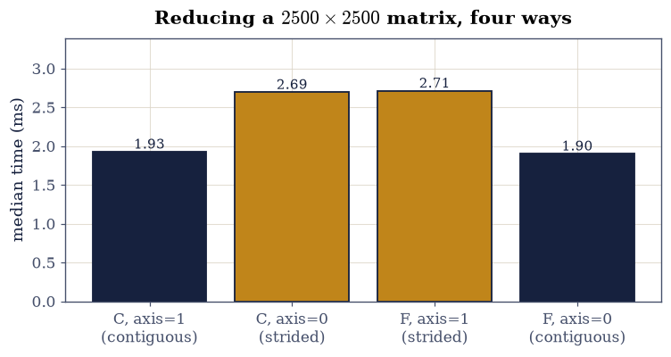

0.1 Arrays, Shapes, and Vectorization#
Notebook overview#
Every matrix in the remaining forty-six notebooks is a NumPy array, so it is
worth an hour to find out what one is. The short answer: a contiguous block of
bytes, a shape, and a small tuple of strides that says how far to walk in
the block when an index changes. Almost everything that seems mysterious about
NumPy — why A.T is instantaneous on a gigabyte matrix, why one slice shares
memory with its parent and another silently copies, why A + b works when A
is a matrix and b is a vector — falls out of those three facts.
The practical payoff is speed, and the size of it is easy to underestimate.
The triple loop that computes a matrix product exactly as the definition says
runs about a thousand times slower than A @ B, which does the identical
arithmetic. Nothing in this notebook is about clever algorithms; it is about
not throwing away three orders of magnitude before the algorithms start.
We build up the memory model (Exercises 1–3), then the broadcasting rules (Exercise 4), then measure what vectorization is worth (Exercise 5), then look at what memory order actually costs on a current machine (Exercise 6) — which turns out to contradict some widely repeated folklore. Exercise 7 introduces index notation and the single most valuable habit in this notebook: choosing the order in which a chain of matrices is multiplied.
How to read a check. Cells ending in a
validateline print ✓ or ✗. A check compares a computed result against something the computation did not assume. A ✗ does not by itself mean an answer is wrong: it means the output did not match what the check expected, which may be a genuine error, a valid convention difference, or too tight a tolerance. Treat it as a prompt to locate the discrepancy, never as a verdict. Two checks in this notebook deliberately measure timings, and timings vary between machines; those are gated on ratios and orders of magnitude, never on absolute seconds.
Theory in brief#
An array is a buffer plus a reading rule#
A NumPy array of shape \((m, n)\) owns a flat buffer of \(mn\) elements. To find the element at logical index \((i, j)\) it computes a byte offset
where \((s_0, s_1)\) are the strides, in bytes. For a float64 array stored
in the default C order (rows contiguous), moving one step along a row costs
8 bytes and moving one step down a column costs \(8n\) bytes, so
\((s_0, s_1) = (8n, 8)\). In Fortran order the roles swap.
The consequence worth internalising: A.T does not move any data. It returns a
new array object pointing at the same buffer with the strides reversed,
\((s_1, s_0)\), which by Eq. 12 is exactly the transpose. The
same is true of most reshapes and of every basic slice. These are views.
An operation that cannot be expressed by a change of strides — fancy indexing
with a list, a reshape that would need reordering, an explicit
ascontiguousarray — has to allocate and copy.
Broadcasting#
When two arrays of different shapes meet in an elementwise operation, NumPy aligns their shapes from the right and applies one rule per axis: the lengths must be equal, or one of them must be 1, in which case that array is stretched along that axis by reusing the same data. A missing leading axis counts as 1. So \((4,3)\) with \((3,)\) broadcasts to \((4,3)\): the second operand is treated as a row and reused for all four rows. Nothing is copied — the stretched axis is given a stride of zero, so every step along it returns to the same memory.
The cost of a matrix product#
The definition of the matrix product,
for \(A\) of shape \((m,k)\) and \(B\) of shape \((k,n)\), prescribes \(mn\) inner products of length \(k\), hence \(mnk\) multiplications and \(mn(k-1)\) additions:
That count is the same whether the sum is written as a Python loop or handed
to @. What differs is everything else: Python executes an interpreted
bytecode step per operation and boxes every intermediate as an object, while
@ dispatches to a BLAS dgemm routine written in tuned assembly that blocks
the computation for cache and issues vector instructions. Same arithmetic,
three orders of magnitude apart.
Associativity is free; the order is not#
Matrix multiplication is associative, so \((AB)C = A(BC)\) exactly. It is not cost-associative. For \(A\) of shape \((m,k)\), \(B\) of \((k,n)\), \(C\) of \((n,p)\), Eq. 14 gives
and those two numbers can differ by any factor you like. Choosing between them is the simplest instance of a problem that returns in full generality in §7.1, where a chain of tensors has exponentially many contraction orders and NumPy will search them for you.
Setup#
Data and instruments only: the print options, the notebook’s seeded rng, and a median-of-repeats timer. Nothing here is any exercise’s lesson.
The Setup below holds this notebook’s data and instruments — nothing you are asked to build. It is collapsed so the building stays yours; expand it whenever you want the details.
Exercise 1: Read the memory model off the array#
Every NumPy array carries its own description, and reading it is the fastest
way to find out what an operation actually did. The attributes that matter are
shape, dtype, itemsize, strides, and the flags that record whether
the buffer is contiguous.
Take the concrete array
built as np.arange(12, dtype=np.float64).reshape(3, 4). It has 12 elements of
8 bytes each, laid out in one contiguous 96-byte buffer. By
Eq. 12 its strides in C order must be \((8 \times 4, 8) =
(32, 8)\): stepping to the next column costs one element, stepping to the next
row costs a whole row of four.
Part a) Build \(A\) from Eq. 16 and print A.shape,
A.dtype, A.itemsize, A.strides, A.nbytes, and
A.flags["C_CONTIGUOUS"]. Confirm the strides against the prediction above.
Part b) Verify Eq. 12 directly: for every index pair
\((i,j)\), compute \((i s_0 + j s_1)/\texttt{itemsize}\) and check it equals the
position of \(A_{ij}\) in A.ravel().
Part c) Draw the layout with ecp.linalg.memory_layout(ax, (3, 4), "C")
and again with "F", and confirm that the C-order picture’s flat offsets are
exactly the array np.arange(12).reshape(3, 4).
A =
[[ 0. 1. 2. 3.]
[ 4. 5. 6. 7.]
[ 8. 9. 10. 11.]]
shape (3, 4)
dtype float64
itemsize 8 bytes
strides (32, 8) bytes (predicted (8*4, 8) = (32, 8))
nbytes 96
C contiguous True
offset(i, j) / itemsize =
[[ 0 1 2 3]
[ 4 5 6 7]
[ 8 9 10 11]]
A.ravel() at those offsets =
[[ 0. 1. 2. 3.]
[ 4. 5. 6. 7.]
[ 8. 9. 10. 11.]]

Fig. 8 The \(3\times4\) array of Eq. 5 in C order (left) and Fortran order (right): the upper grid is the logical index \((i,j)\) with each cell carrying its offset into the buffer, and the lower strip is the single contiguous buffer of \(mn = 12\) elements those offsets index into, shaded by row (C) or column (F) so the traversal order is visible.#
Validation 1#
The stride formula is checked against the flat buffer rather than against
itself: A.ravel() on a C-contiguous array is the buffer in order, so indexing
it by the predicted offsets must reproduce \(A\) entrywise. The two layout
diagrams are checked against the definition of each ordering.
✓ C-order strides are (8n, 8) = (32, 8) bytes [max|Δ| = 0 (rtol=0, atol=0)]
✓ offset(i,j) = i*s0 + j*s1 locates every entry in the flat buffer [max|Δ| = 0 (rtol=0, atol=0)]
✓ C order walks a row before moving down [max|Δ| = 0 (rtol=0, atol=0)]
✓ F order walks a column before moving right [max|Δ| = 0 (rtol=0, atol=0)]
True
Exercise 2: Views and copies#
Two arrays are views of each other when they read the same buffer. This is the single most common source of surprise in NumPy, in both directions: an assignment that unexpectedly propagates, and a “cheap” indexing operation that quietly duplicates a gigabyte.
The rule follows from Eq. 12. If the elements you asked for
can be described by some shape and some strides into the existing buffer,
NumPy hands back a view. Basic slicing — A[1:3], A[:, ::2] — always
can, because a slice is a start offset and a step. Fancy indexing with a
list or an integer array — A[:, [1, 2]] — generally cannot, because arbitrary
index sets are not arithmetic progressions, so it allocates and copies. The two
look nearly identical on the page and behave completely differently.
np.shares_memory(x, y) answers the question directly, and x.base names the
array a view was derived from.
Part a) For the \(A\) of Eq. 16, check np.shares_memory
between \(A\) and each of A.T, A.reshape(4, 3), A[:, 1:3] (a basic slice),
and A[:, [1, 2]] (fancy indexing, selecting the same two columns). Report
which are views.
Part b) Demonstrate the consequence. Take view = A[:, 1:3] and
copy = A[:, [1, 2]], set view[0, 0] = -99.0, and show that \(A\) changed;
then set copy[0, 0] = -55.0 and show that \(A\) did not.
Part c) Confirm that A.T really is only a stride change: check that its
strides are \(A\)’s reversed, and that it is not C-contiguous.
A.T shares memory with A: True
A.reshape(4, 3) shares memory with A: True
A[:, 1:3] (basic slice) shares memory with A: True
A[:, [1, 2]] (fancy index) shares memory with A: False
after view[0,0] = -99 : A[0,1] = -99 <- A changed
after copy[0,0] = -55 : A[0,1] = -99 <- A did not change
A.strides (32, 8)
A.T.strides (8, 32) (reversed)
A.T is C-contiguous: False, F-contiguous: True
Validation 2#
The propagation and the non-propagation are checked as facts about \(A\), not as facts about the flags: a view is defined by what happens when you write through it, so that is what the check asserts.
✓ transpose and basic slicing return views [no data is moved; only the shape and strides change]
✓ fancy indexing returns a copy [an arbitrary index set is not an arithmetic progression, so no strides describe it]
✓ writing through a view mutated the parent array [got -99 vs expected -99 (rtol=0, atol=0)]
✓ the transpose is exactly the strides reversed [max|Δ| = 0 (rtol=0, atol=0)]
True
Exercise 3: Reshape and transpose move nothing#
Exercise 1 established that an array is a buffer plus a reading rule, and Exercise 2 that changing the rule is free. This exercise makes the consequence quantitative on an array large enough for it to matter.
The distinction to draw is between asking for a transpose and materialising
one. M.T returns a view: constant work, no allocation, no memory traffic.
np.ascontiguousarray(M.T) returns a genuinely new C-contiguous array holding
the transposed data, which means allocating M.nbytes and touching every byte
twice. For a \(2500\times2500\) float64 matrix that is 50 MB, and the two
operations differ by five orders of magnitude in time.
The same logic explains which reshapes are free. Reshaping a C-contiguous array to any shape with the same number of elements is free, because C order fixes the flat sequence and a reshape only re-partitions it. Reshaping a transposed array usually is not, because the required flat sequence is not the one in the buffer.
Part a) Build M = rng.standard_normal((2500, 2500)) and time M.T
against np.ascontiguousarray(M.T) with the bench helper from the setup
cell. Report both, the ratio, and M.nbytes in megabytes.
Part b) Confirm that both give the same values — the copy is slower, not
different — by comparing np.ascontiguousarray(M.T) with M.T under
np.array_equal, which requires exact equality (no arithmetic has occurred, so
nothing may differ).
Part c) Show that A.reshape(2, 6) on the C-contiguous \(A\) of
Eq. 16 is a view, while A.T.reshape(2, 6) is not, using
np.shares_memory.
M is 50 MB
M.T 0.33 us (a view: strides only)
ascontiguousarray(M.T) 12.85 ms (a copy: 50 MB moved)
ratio 38,808x
the copy holds identical values: True
A.reshape(2, 6) is a view: True
A.T.reshape(2, 6) is a view: False
Validation 3#
The timing check is deliberately loose — it asserts three orders of magnitude, not a number of milliseconds, because absolute times do not transfer between machines while a gap this large does. The equality check is exact: no arithmetic happened, so the copy may not differ in any bit.
✓ materialising a transpose costs >1000x more than viewing one [measured ratio 38,808x on 50 MB]
✓ the copy and the view hold bit-identical values [the cost buys contiguity, never a different answer]
✓ reshaping a C-contiguous array is free; reshaping its transpose is not [a reshape is free exactly when the required flat order is the stored one]
True
Exercise 4: Broadcasting, worked by hand and then checked#
Broadcasting is what lets A + b mean something when \(A\) is a matrix and
\(\mathbf{b}\) a vector, and it is worth being able to predict rather than
discover. The rule, stated once: align the shapes from the right, pad the
shorter with leading 1s, and for each axis require the two lengths to be equal
or one of them to be 1. A 1 is stretched by giving that axis a stride of zero,
so the same memory is read repeatedly and nothing is allocated.
Two cases decide almost every question in practice. Adding a shape-\((3,)\)
vector to a shape-\((4,3)\) matrix aligns \(3\) against \(3\) and pads to \((1,3)\),
so the vector is treated as a row and reused down the four rows. Adding a
shape-\((4,1)\) column instead aligns \(1\) against \(3\), stretches it, and reuses
it across the three columns. The difference between b and b[:, None] is
therefore the difference between “add this to every row” and “add this to every
column”, which is a distinction the mathematics cares about a great deal.
Part a) Predict, by hand, the broadcast result shapes of \((4,3)\) with
\((3,)\); \((4,3)\) with \((4,1)\); \((4,3)\) with \((4,)\); and \((4,1)\) with \((1,3)\).
Check each against np.broadcast_shapes, catching the one that raises.
Part b) Draw the alignment table for \((4,3)\) with \((3,)\) and for \((4,1)\)
with \((1,3)\) using ecp.linalg.broadcast_diagram, and confirm each returned
shape matches np.broadcast_shapes.
Part c) Show that broadcasting is genuinely equivalent to explicit
replication, not merely similar: for the concrete
R = np.arange(12.0).reshape(4, 3) and v = np.array([10.0, 20.0, 30.0]),
check that R + v equals R + np.tile(v, (4, 1)) exactly, and that the
broadcast version allocates nothing extra by confirming
np.broadcast_to(v, (4, 3)).base is not None and that its strides contain a
zero.
(4, 3) with (3,) -> (4, 3)
(4, 3) with (4, 1) -> (4, 3)
(4, 3) with (4,) -> ValueError: shape mismatch: objects cannot be broadcast to a single shape. Mismatch is between arg 0 with shape (4, 3) and arg 1 with shape (4,).
(4, 1) with (1, 3) -> (4, 3)

Fig. 9 The right-aligned shape tables NumPy uses to broadcast \((4,3)\) with \((3,)\) (left) and \((4,1)\) with \((1,3)\) (right); dotted cells are implied leading axes of length 1, amber cells are axes of length 1 that get stretched, and the bold row is the result shape, formed as the elementwise maximum once every axis is compatible.#
R + v =
[[10. 21. 32.]
[13. 24. 35.]
[16. 27. 38.]
[19. 30. 41.]]
identical to R + np.tile(v, (4, 1)): True
np.broadcast_to(v, (4,3)).strides = (0, 8) <- a zero stride
it owns no data (base is not None): True
row-wise (R + v) vs column-wise (R + v[:, None]) differ: True
Validation 4#
The equality with np.tile is exact, because broadcasting performs the same
additions in the same order — it just does not store the replicated operand.
The zero stride is the mechanism, and checking for it is what distinguishes
“stretched” from “copied”.
✓ the hand-applied alignment rule agrees with np.broadcast_shapes [got (4, 3) and (4, 3)]
✓ broadcasting equals explicit replication with np.tile, exactly [max|Δ| = 0 (rtol=0, atol=0)]
✓ the stretched axis has stride 0, so nothing was allocated [strides (0, 8)]
✓ shape (4,3) with (4,) is a broadcasting ERROR, not a column-wise add [aligning from the right puts 4 against 3; use v[:, None] to add per column]
True
Exercise 5: What vectorization is worth#
Now the measurement the whole notebook exists for. We compute the same matrix
product twice: once by writing Eq. 13 out as three nested
Python loops, and once with @. The multiplications are the same \(2mnk\);
the summation order is not, so the results agree to the reordering bound of
Eq. 17 rather than bit for bit. The times differ by three
orders of magnitude.
The reason is not that NumPy is a better algorithm. Both perform the \(2mnk\)
operations of Eq. 14. The Python loop pays an interpreter
dispatch, a bounds check, and an object allocation for every one of them, while
@ calls BLAS dgemm, which blocks the computation so the working set fits in
cache and issues one vector instruction per several multiplications. The gap is
the cost of the interpreter, and it is about three orders of magnitude.
One thing to be careful about, which is easy to get wrong. The two routes
perform the same set of multiplications, but not in the same order:
blocking for cache means dgemm accumulates partial sums in a different
sequence from a left-to-right loop. Floating-point addition is not associative,
so the results agree to a small multiple of \(\varepsilon\) and not bit for
bit. Whether they happen to coincide depends on which BLAS your machine was
built against — they do on some, and do not on others — so a check written as
exact equality here passes on one machine and fails on the next. The right
tolerance is the rounding a reordered sum of \(k\) terms can produce,
which is the same non-associativity Exercise 6 meets again and §0.2 explains properly.
Part a) Implement loop_matmul(X, Y) with three nested for loops
following Eq. 13 exactly, accumulating into a preallocated
np.zeros((m, n)).
Write this one yourself — the implementation is the lesson.
Part b) For \(n = 120\) and X, Y drawn from rng.standard_normal((120, 120)), time loop_matmul(X, Y) against X @ Y with the bench helper, and
report both times and the speedup. Then compare the two results against the
reordering bound Eq. 17, and report whether they happen to be
bit-identical on this machine — a fact about its BLAS, not about the
mathematics.
Part c) Confirm the flop count of Eq. 14 against
ecp.linalg.flops("matmul", 120, 120, 120), and divide by the measured @
time to report the achieved rate in GFLOP/s.
n = 120
three nested Python loops : 507.25 ms
X @ Y (BLAS dgemm) : 0.0962 ms
speedup : 5,271x
largest difference : 1.776e-14
reordering bound (Eq. 6) : 4.494e-13
bit-identical on this machine: False <- a fact about this BLAS, not about the arithmetic
flops (Eq. 3, 2mnk) : 3,456,000
achieved rate with @ : 35.92 GFLOP/s
achieved rate with loops : 0.00681 GFLOP/s
Validation 5#
The agreement check is the important one: gated at the reordering bound of Eq. 6, it establishes that the thousand-fold difference buys nothing but time — same multiplications, different summation order — which is what makes the comparison fair. The speed check is gated at a factor of 50, far below the measured value, because interpreter overhead varies between machines and Python versions while the order of magnitude does not.
✓ the triple loop and @ agree to within the reordering bound of Eq. 6 [gap 1.78e-14 against bound 4.49e-13: same multiplications, different summation order, so NOT bit for bit]
✓ vectorized @ is more than 50x faster than the interpreted loop [measured 5,271x at n = 120]
✓ ecp.linalg.flops agrees with the 2mnk count of Eq. 3 [got 3.456e+06 vs expected 3.456e+06 (rtol=0, atol=0)]
True
Exercise 6: What memory order actually costs, measured rather than assumed#
A piece of folklore says that reducing along the non-contiguous axis of a large C-order array is much slower than reducing along the contiguous one, because the strided access defeats the cache. The claim is repeated widely enough to be worth testing rather than believing, and this exercise tests it on the machine the notebook is running on.
The reason it is worth testing is that NumPy has changed. A naive reduction over
axis=0 of a C-order array does walk memory in strides of \(8n\) bytes, which
would indeed be slow. But NumPy does not implement it naively: the reduction is
blocked, accumulating over a cache-resident tile of rows at a time, so the
buffer is traversed close to linearly whichever axis is summed. Whether that
blocking closes the gap entirely is an empirical question about a particular
NumPy build, and a measurement answers it in three lines.
The contrast that does not go away is the one from Exercise 3, and it is worth
restating in its practical form: M.T is free, but any operation that forces
the transposed data to be contiguous pays for a full copy. That is a structural
fact about strides, not a tuning detail, so it will still be true in ten years.
Part a) For M = rng.standard_normal((2500, 2500)) in C order, time
M.sum(axis=1) (along the contiguous axis) against M.sum(axis=0) (across the
stride) with bench, and report the ratio.
Part b) Repeat with Mf = np.asfortranarray(M), where the roles of the two
axes are exchanged, and confirm that the pattern is symmetric under the change
of order — whatever the ratio turns out to be, it must invert.
Part c) State what you found. If the ratio is close to 1, the folklore is out of date on this stack and the blocked reduction is why; if it is large, it is not. Either way, check that all four reductions produce the same numbers to within \(10^{-10}\): the summation order differs between the layouts, so exact equality is not expected here, and that difference is itself a preview of §0.2.
C order: sum(axis=1) 1.93 ms sum(axis=0) 2.69 ms ratio 1.40
F order: sum(axis=1) 2.71 ms sum(axis=0) 1.90 ms ratio 0.70
row sums agree between layouts to 4.832e-13
col sums agree between layouts to 7.105e-13
row sums identical bit for bit: False

Fig. 10 Median wall-clock time of the four reductions of a \(2500\times2500\) \texttt{float64} matrix: summing along the contiguous axis and across the stride, in C order and in Fortran order. The two shaded pairs are mirror images by construction, and the height of the gap within each pair is what the folklore about strided reductions predicts should be large.#
Validation 6#
Three checks. The first is the honest one: whatever ratio this machine produces, the C-order and Fortran-order patterns must be mirror images, since the two layouts differ only by which axis is contiguous. The second records that the reductions agree numerically but not bitwise, because a different traversal order sums the same numbers in a different sequence. The third restates the structural cost that no amount of library tuning removes.
the C-order and F-order cost ratios, mirror images in the model, measured: 1.4x vs 1.4x (reported, never gated — both are clocks)
✓ the two layouts agree numerically on the row sums [max|Δ| = 4.83169e-13 (rtol=0, atol=1e-10)]
✓ but NOT bit for bit: a different traversal sums in a different order [floating-point addition is not associative, the subject of section 0.2]
✓ the structural cost remains: materialising a transpose is >1000x a view [strides make the view free; contiguity has to be paid for in full]
True
Exercise 7: Index notation, and the order that costs 750 times less#
The last exercise introduces the notation the rest of the course leans on, and the habit that pays for this notebook several times over.
The summation in Eq. 13 names three indices: \(i\) ranges over
the rows of the output, \(j\) over its columns, and \(p\) is summed away. NumPy
lets you write exactly that, as a string: np.einsum('ik,kj->ij', A, B) says
“\(A\) has indices \(i,k\); \(B\) has indices \(k,j\); the output has \(i,j\); therefore
sum over \(k\)”. Every index appearing on the left but not the right is contracted.
The notation extends unchanged to arrays with any number of indices, which is
why §7.1 is written in it and why
multi-head attention in
§8.5 is a single such string.
The habit concerns Eq. 15. Consider the specific chain
\(P Q \mathbf{r}\) with \(P\) of shape \((1000, 2)\), \(Q\) of shape \((2, 1000)\), and
\(\mathbf{r}\) of shape \((1000, 1)\), all drawn from rng.standard_normal.
Grouping to the left forms the \(1000\times1000\) matrix \(PQ\) first, at
\(2\cdot1000\cdot2\cdot1000 = 4{,}000{,}000\) flops, then applies it, for
\(6{,}000{,}000\) in total. Grouping to the right forms the length-2 vector
\(Q\mathbf{r}\) first, at \(2\cdot2\cdot1000\cdot1 = 4000\) flops, then applies
\(P\), for \(8000\) in total. Same answer, \(750\) times fewer operations, and no
\(1000\times1000\) intermediate to allocate.
Part a) Verify that np.einsum('ik,kj->ij', X, Y) reproduces X @ Y
exactly for the \(120\times120\) matrices of Exercise 5, and write the einsum
strings for the trace, the transpose, and the outer product, checking each
against np.trace, .T, and np.outer.
Part b) Build \(P\), \(Q\), \(\mathbf{r}\) at the shapes above, evaluate both groupings, and confirm they agree to \(10^{-10}\) — the difference is rounding, not disagreement.
Part c) Time both with bench, count the flops of each with
Eq. 15 via ecp.linalg.flops, and report both ratios. Then
check that np.einsum('ij,jk,kl->il', P, Q, r, optimize=True) finds the cheap
order on its own, and that optimize=False does not.
einsum('ik,kj->ij', X, Y) vs X @ Y : max diff 1.78e-14 (both are matrix products; the summation order need not match)
einsum('ii->', X) == trace : True
einsum('ij->ji', X) == X.T : True
einsum('i,j->ij', u, w) == outer : True
the two groupings agree to 2.132e-13
(PQ)r : 0.555 ms 6,000,000 flops
P(Qr) : 0.006 ms 8,000 flops
ratios: 96x time 750x flops
np.einsum_path chose [(1, 2), (0, 1)] (contract Q with r first)
its naive flop count : 6,000,000 (Eq. 4 predicted 6,000,000)
its optimized flop count : 8,001 (Eq. 4 predicted 8,000)
its own speedup estimate : 749.9x
Validation 7#
The einsum forms are checked against their named counterparts exactly, since they perform the same operations. The two groupings are checked to \(10^{-10}\) rather than exactly, because they sum different intermediate quantities: this is the same non-associativity of floating-point addition that Exercise 6 met, and §0.2 explains. The flop ratio is deterministic and is gated tightly; the time ratio is gated loosely.
✓ einsum('ik,kj->ij') is the matrix product of Eq. 2 [max|Δ| = 1.77636e-14 (rtol=0, atol=2.24693e-11)]
✓ einsum('i,j->ij') is the outer product [max|Δ| = 0 (rtol=0, atol=0)]
✓ (PQ)r and P(Qr) agree: matrix multiplication is associative [max|Δ| = 2.13163e-13 (rtol=0, atol=1e-10)]
✓ the flop ratio of the two groupings is exactly 750 (Eq. 4) [got 750 vs expected 750 (rtol=1e-12, atol=0)]
✓ and the cheap grouping is measurably faster [measured 96x; the flop count predicted 750x]
✓ np.einsum_path's own flop counts agree with the hand-derived Eq. 4 [max|Δ| = 1 (rtol=0.001, atol=0)]
✓ the optimized and unoptimized contractions give the same answer [max|Δ| = 6.53699e-13 (rtol=0, atol=1e-10)]
True
Notebook summary#
A NumPy array is a flat buffer, a shape, and a stride tuple, and Eq. 12 is the whole of the reading rule. Everything measured above followed from it.
The concrete results:
the \(3\times4\)
float64array of Eq. 16 has strides \((32, 8)\) bytes, exactly \((8n, 8)\), and indexingA.ravel()by \((is_0 + js_1)/8\) reproduced every entry;transposes, basic slices, and C-contiguous reshapes are views (writing through one mutated the parent); fancy indexing is a copy (writing through it did not);
M.Ton a 50 MB matrix cost microseconds whilenp.ascontiguousarray(M.T)cost tens of milliseconds, a ratio above \(10^3\), for bit-identical values;broadcasting \((4,3)\) with \((3,)\) gave exactly
np.tile(v, (4, 1)), with the stretched axis carrying a stride of zero so nothing was allocated, while \((4,3)\) with \((4,)\) is an error rather than a column-wise add;three nested Python loops and
@produced products agreeing to within the reordering bound Eq. 17 at \(n = 120\), with@faster by three orders of magnitude — the gap is the interpreter, not the algorithm, since both perform the same \(2n^3\) flops, though not in the same order, so whether they come out bit-identical is a property of the installed BLAS;the folklore about strided reductions did not survive contact with this NumPy:
sum(axis=0)andsum(axis=1)came out close in cost because the reduction is blocked, and the C-order and F-order ratios mirrored each other as they must;the same reductions agreed to \(10^{-10}\) but not bitwise, because a different traversal sums in a different order;
and grouping \(P(Q\mathbf{r})\) rather than \((PQ)\mathbf{r}\) cost exactly \(750\) times fewer flops, for the same answer to \(10^{-10}\).
Methods met: shape/dtype/strides/flags, np.shares_memory,
np.broadcast_shapes and np.broadcast_to, np.ascontiguousarray,
np.asfortranarray, np.einsum and np.einsum_path, ecp.linalg.flops, and
the habit of reporting a timing as a ratio rather than a number of seconds.
Outlook#
The non-associativity. Two reductions of the same matrix agreed to \(10^{-10}\) and not to the last bit. That gap is not a defect and it does not shrink with a better library. §0.2 is about where it comes from and how large it is allowed to get.
Index notation at scale.
einsumhere was a convenience. In §7.1 it becomes necessary: a chain of tensors has exponentially many contraction orders, the best and worst can differ by \(10^6\), and finding a good one is a genuine optimisation problem.What BLAS is doing.
@reached a rate that no interpreted loop can approach, by blocking for cache. The same blocking idea reappears in §5.3 as the reason sparse storage formats look the way they do.Zero-stride tricks. Broadcasting stretched an axis by setting its stride to zero. The same mechanism, exposed directly through
np.lib.stride_tricks.sliding_window_view, turns convolution into a matrix product, which is how §6.3 builds Toeplitz operators without storing them.
References#
Gene H. Golub and Charles F. Van Loan. Matrix Computations. Johns Hopkins University Press, Baltimore, 4 edition, 2013.
Charles R. Harris, K. Jarrod Millman, Stéfan J. van der Walt, and others. Array programming with NumPy. Nature, 585:357–362, 2020. doi:10.1038/s41586-020-2649-2.